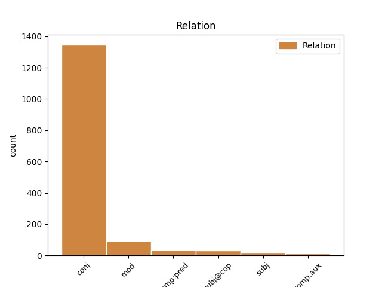
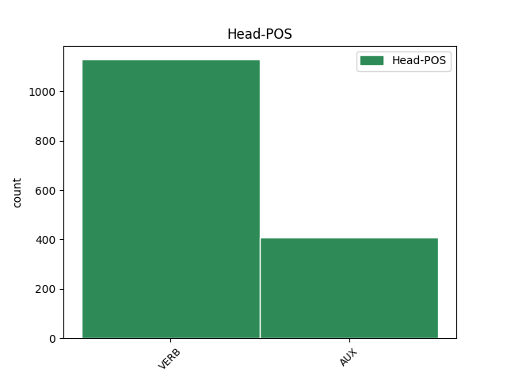
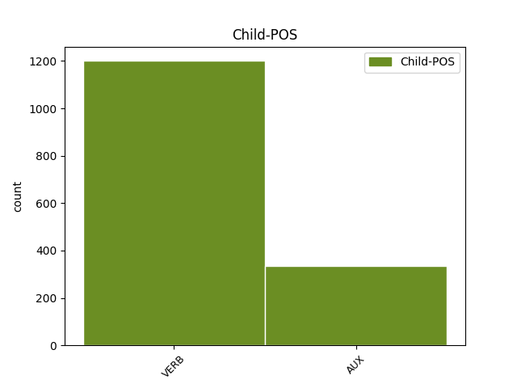

Distribution of features within this leaf



Agreement Rules sorted by frequency.
- When the dependent token is the conjunct(conj) of the head token,
1 - _ _ _ _ 0 _ _ _
2 Tullaan tulla VERB V,Pass,Ind,Pres Mood=Ind|Tense=Pres|VerbForm=Fin|Voice=Pass 0 _ _ _
3 tullaan tulla VERB V,Pass,Ind,Pres Mood=Ind|Tense=Pres|VerbForm=Fin|Voice=Pass 2 conj _ _
4 . _ _ _ _ 0 _ _ _
1 Suomessa _ _ _ _ 0 _ _ _
2 on olla AUX V,Act,Ind,Pres,Sg3 Mood=Ind|Number=Sing|Person=3|Tense=Pres|VerbForm=Fin|Voice=Act 0 _ _ _
3 näköjään _ _ _ _ 0 _ _ _
4 mahdollista _ _ _ _ 0 _ _ _
5 ihan _ _ _ _ 0 _ _ _
6 kaikki _ _ _ _ 0 _ _ _
7 , _ _ _ _ 0 _ _ _
8 mikä _ _ _ _ 0 _ _ _
9 suuressa _ _ _ _ 0 _ _ _
10 maailmassakin _ _ _ _ 0 _ _ _
11 , _ _ _ _ 0 _ _ _
12 erityisesti _ _ _ _ 0 _ _ _
13 mitä _ _ _ _ 0 _ _ _
14 tunarointiin _ _ _ _ 0 _ _ _
15 tulee tulla VERB V,Act,Ind,Pres,Sg3 Mood=Ind|Number=Sing|Person=3|Tense=Pres|VerbForm=Fin|Voice=Act 2 mod _ _
16 . _ _ _ _ 0 _ _ _
1 Virheliike _ _ _ _ 0 _ _ _
2 se _ _ _ _ 0 _ _ _
3 on olla AUX V,Act,Ind,Pres,Sg3 Mood=Ind|Number=Sing|Person=3|Tense=Pres|VerbForm=Fin|Voice=Act 0 _ _ _
4 , _ _ _ _ 0 _ _ _
5 joka _ _ _ _ 0 _ _ _
6 ihmisen _ _ _ _ 0 _ _ _
7 liikkeessä _ _ _ _ 0 _ _ _
8 pitää pitää VERB V,Act,Ind,Pres,Sg3 Mood=Ind|Number=Sing|Person=3|Tense=Pres|VerbForm=Fin|Voice=Act 3 subj@cop _ _
9 . _ _ _ _ 0 _ _ _
1 Onko olla AUX V,Act,Ind,Pres,Sg3,Ko Clitic=Ko|Mood=Ind|Number=Sing|Person=3|Tense=Pres|VerbForm=Fin|Voice=Act 0 _ _ _
2 se _ _ _ _ 0 _ _ _
3 se _ _ _ _ 0 _ _ _
4 , _ _ _ _ 0 _ _ _
5 että _ _ _ _ 0 _ _ _
6 istuu istua VERB V,Act,Ind,Pres,Sg3 Mood=Ind|Number=Sing|Person=3|Tense=Pres|VerbForm=Fin|Voice=Act 1 comp:pred _ _
7 autossa _ _ _ _ 0 _ _ _
8 tunnin _ _ _ _ 0 _ _ _
9 ylimääräistä _ _ _ _ 0 _ _ _
1 Piruako _ _ _ _ 0 _ _ _
2 se _ _ _ _ 0 _ _ _
3 kansalle _ _ _ _ 0 _ _ _
4 kuuluu kuulua VERB V,Act,Ind,Pres,Sg3 Mood=Ind|Number=Sing|Person=3|Tense=Pres|VerbForm=Fin|Voice=Act 0 _ _ _
5 mitä _ _ _ _ 0 _ _ _
6 herrat _ _ _ _ 0 _ _ _
7 päättää päättää VERB V,Act,Ind,Pres,Sg3 Mood=Ind|Number=Sing|Person=3|Tense=Pres|VerbForm=Fin|Voice=Act 4 subj _ _
8 . _ _ _ _ 0 _ _ _
1 ja _ _ _ _ 0 _ _ _
2 nythän _ _ _ _ 0 _ _ _
3 meidän _ _ _ _ 0 _ _ _
4 ongelma _ _ _ _ 0 _ _ _
5 viime _ _ _ _ 0 _ _ _
6 vuosina _ _ _ _ 0 _ _ _
7 on olla AUX V,Act,Ind,Pres,Sg3 Mood=Ind|Number=Sing|Person=3|Tense=Pres|VerbForm=Fin|Voice=Act 0 _ _ _
8 ollu _ _ _ _ 0 _ _ _
9 se _ _ _ _ 0 _ _ _
10 että _ _ _ _ 0 _ _ _
11 meidän _ _ _ _ 0 _ _ _
12 moottorimme _ _ _ _ 0 _ _ _
13 ei _ _ _ _ 0 _ _ _
14 ole olla AUX V,Act,Ind,Pres,ConNeg Connegative=Yes|Mood=Ind|Tense=Pres|VerbForm=Fin|Voice=Act 7 comp:aux _ _
15 pystynyt _ _ _ _ 0 _ _ _
16 kannattamaan _ _ _ _ 0 _ _ _
17 sitä _ _ _ _ 0 _ _ _
18 järjestelmää _ _ _ _ 0 _ _ _
19 joka _ _ _ _ 0 _ _ _
20 meillä _ _ _ _ 0 _ _ _
21 on _ _ _ _ 0 _ _ _
22 , _ _ _ _ 0 _ _ _
23 elikkä _ _ _ _ 0 _ _ _
24 meidän _ _ _ _ 0 _ _ _
25 talouselämä _ _ _ _ 0 _ _ _
26 on _ _ _ _ 0 _ _ _
27 ollut _ _ _ _ 0 _ _ _
28 puolikäytössä _ _ _ _ 0 _ _ _
29 , _ _ _ _ 0 _ _ _
30 ja _ _ _ _ 0 _ _ _
31 niin _ _ _ _ 0 _ _ _
32 kun _ _ _ _ 0 _ _ _
33 täällä _ _ _ _ 0 _ _ _
34 aiemmin _ _ _ _ 0 _ _ _
35 todettiin _ _ _ _ 0 _ _ _
36 niin _ _ _ _ 0 _ _ _
37 kaiken _ _ _ _ 0 _ _ _
38 avain _ _ _ _ 0 _ _ _
39 on _ _ _ _ 0 _ _ _
40 meidän _ _ _ _ 0 _ _ _
41 sosiaaliturvan _ _ _ _ 0 _ _ _
42 kannalta _ _ _ _ 0 _ _ _
43 se _ _ _ _ 0 _ _ _
44 että _ _ _ _ 0 _ _ _
45 meidän _ _ _ _ 0 _ _ _
46 talous _ _ _ _ 0 _ _ _
47 on _ _ _ _ 0 _ _ _
48 kunnossa _ _ _ _ 0 _ _ _
49 , _ _ _ _ 0 _ _ _
50 se _ _ _ _ 0 _ _ _
51 sallii _ _ _ _ 0 _ _ _
52 varsin _ _ _ _ 0 _ _ _
53 suuret _ _ _ _ 0 _ _ _
54 erot _ _ _ _ 0 _ _ _
55 maiden _ _ _ _ 0 _ _ _
56 välillä _ _ _ _ 0 _ _ _
57 . _ _ _ _ 0 _ _ _
Disagree Examples:
1 nii _ _ _ _ 0 _ _ _
2 huomasin _ _ _ _ 0 _ _ _
3 että _ _ _ _ 0 _ _ _
4 siel _ _ _ _ 0 _ _ _
5 on olla VERB V,Act,Ind,Pres,Sg3 Mood=Ind|Number=Sing|Person=3|Tense=Pres|VerbForm=Fin|Voice=Act 0 _ _ _
6 kalosseja _ _ _ _ 0 _ _ _
7 ja _ _ _ _ 0 _ _ _
8 ne _ _ _ _ 0 _ _ _
9 oli olla AUX V,Act,Ind,Past,Sg3 Mood=Ind|Number=Sing|Person=3|Tense=Past|VerbForm=Fin|Voice=Act 5 conj _ _
10 iha _ _ _ _ 0 _ _ _
11 nättiä _ _ _ _ 0 _ _ _
1 ajatus _ _ _ _ 0 _ _ _
2 oli olla AUX V,Act,Ind,Past,Sg3 Mood=Ind|Number=Sing|Person=3|Tense=Past|VerbForm=Fin|Voice=Act 0 _ _ _
3 sekö _ _ _ _ 0 _ _ _
4 , _ _ _ _ 0 _ _ _
5 että _ _ _ _ 0 _ _ _
6 aloitetaan aloittaa VERB V,Pass,Ind,Pres Mood=Ind|Tense=Pres|VerbForm=Fin|Voice=Pass 2 comp:pred _ _
7 kysymyksistä _ _ _ _ 0 _ _ _
8 ? _ _ _ _ 0 _ _ _
1 Useimmilla _ _ _ _ 0 _ _ _
2 on olla VERB V,Act,Ind,Pres,Sg3 Mood=Ind|Number=Sing|Person=3|Tense=Pres|VerbForm=Fin|Voice=Act 0 _ _ _
3 kesävaatetus _ _ _ _ 0 _ _ _
4 , _ _ _ _ 0 _ _ _
5 olipa olla AUX V,Act,Ind,Past,Sg3,Pa Clitic=Pa|Mood=Ind|Number=Sing|Person=3|Tense=Past|VerbForm=Fin|Voice=Act 2 mod _ _
6 tuuli _ _ _ _ 0 _ _ _
7 kuinka _ _ _ _ 0 _ _ _
8 raaka _ _ _ _ 0 _ _ _
9 tahansa _ _ _ _ 0 _ _ _
10 ja _ _ _ _ 0 _ _ _
11 satoipa _ _ _ _ 0 _ _ _
12 lunta _ _ _ _ 0 _ _ _
13 tai _ _ _ _ 0 _ _ _
14 ei _ _ _ _ 0 _ _ _
15 . _ _ _ _ 0 _ _ _
1 Rentoneeko rennota VERB V,Act,Ind,Pres,Sg3,Ko Clitic=Ko|Mood=Ind|Number=Sing|Person=3|Tense=Pres|VerbForm=Fin|Voice=Act 0 _ _ _
2 tää _ _ _ _ 0 _ _ _
3 meininki _ _ _ _ 0 _ _ _
4 täällä _ _ _ _ 0 _ _ _
5 vuosi vuotaa VERB V,Act,Ind,Past,Sg3 Mood=Ind|Number=Sing|Person=3|Tense=Past|VerbForm=Fin|Voice=Act 1 mod _ _
6 vuodelta _ _ _ _ 0 _ _ _
7 ? _ _ _ _ 0 _ _ _
1 Takanamme _ _ _ _ 0 _ _ _
2 olevat _ _ _ _ 0 _ _ _
3 naiset _ _ _ _ 0 _ _ _
4 hyppivät hyppiä VERB V,Act,Ind,Pres,Pl3 Mood=Ind|Number=Plur|Person=3|Tense=Pres|VerbForm=Fin|Voice=Act 0 _ _ _
5 ja _ _ _ _ 0 _ _ _
6 huusivat huutaa VERB V,Act,Ind,Past,Pl3 Mood=Ind|Number=Plur|Person=3|Tense=Past|VerbForm=Fin|Voice=Act 4 conj _ _
7 kannustuksia _ _ _ _ 0 _ _ _
8 . _ _ _ _ 0 _ _ _